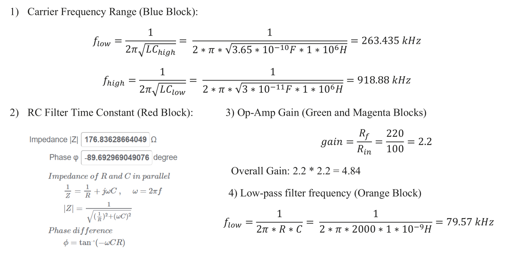

AM Radio Receiver
November 2021
EN.520.231 Mastering Electronics Lab
Objectives:
Build an AM radio receiver to listen to nearby radio audio with a long wire
Skills Applied:
LTSpice schematics, debugging with multimeter
AM radio frequency envelopes
Comments:
I used the minimum number of components possible to make a functional radio receiver. It can receive
2 channels with a 30-365 pF tunable capacitor.
Amazingly, when I touch the input wire with my fingers, the circuit can also use my body as
an antenna and receive a quieter but audible signal.

Relevant calculations.